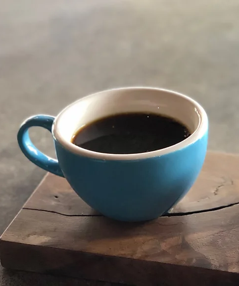

Italian Culture & Fun Facts
1. Passeggiata: The Evening Stroll.
A beloved daily ritual, the passeggiata is a leisurely evening walk where Italians socialize, relax, and show off new outfits—especially in smaller towns.
.jpg)
2. Coffe Culture is Strict.
In Italy, cappuccinos are strictly considered breakfast drinks and ordering one after 11 AM is unusual. Espresso is the go-to choice after meals.
3. Fashion & Bella Figura
Bella figura embodies the Italian ideal of presenting oneself with elegance, grace, and an awareness of both appearance and behavior. It emphasizes quality over quantity, with a focus on timeless style, refined details, and confidence in one's personal expression. Beyond fashion, its a way of living with dignity, politeness, and a constant pursuit of beauty and harmony in every aspect of life.
.jpg)
4. UNESCO & History Powerhouse.
Italy has more UNESCO World Heritage Sites than any other country, showcasing its unmatched cultural, architectural, and historical legacy.
.jpg)
5. Vatican City: A Country Inside Rome.
Vatican City is the worlds smallest independent country, entirely surrounded by Rome—making Italy, the only nation containing another sovereign state.
.jpg)
6. The Trevi Fountain Coin Toss Tradition.
Tossing a coin into Romes Trevi Fountain is said to guarantee a return trip to Italy. All collected coins are donated to charity.
.jpg)
7. Forks & Opera: Italian Innovations
Italians helped perfect the modern fork and invented opera, influencing global culture and music.
.jpg)